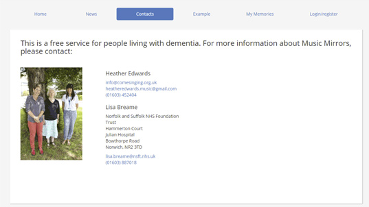
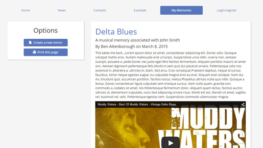

Music Mirrors
Music Mirrors is a social media project which allows users to store the memories they have and the music associated with those memories. Work currently being done at the University of East Anglia is investigating the power of music to revive old memories. Using music can be a way to ease communication with people with dementia, by heping to unlock forgotten memories. The aim of the project is to help health care workers and family members to communicate better with patients. Visit Music Mirrors here

Logo

Contact page

Memories page